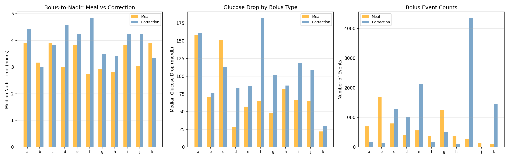
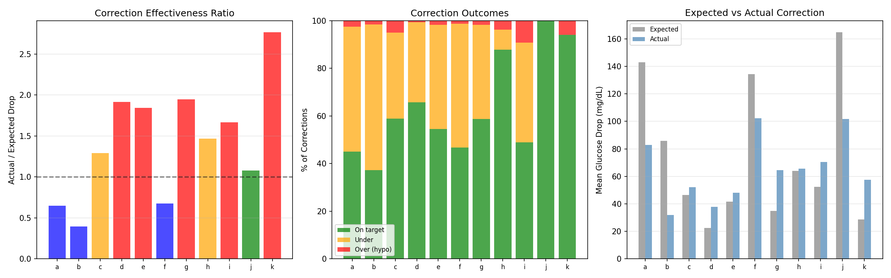
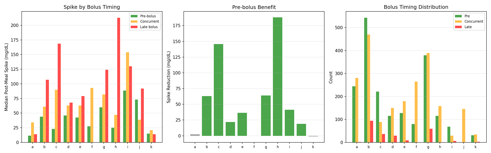
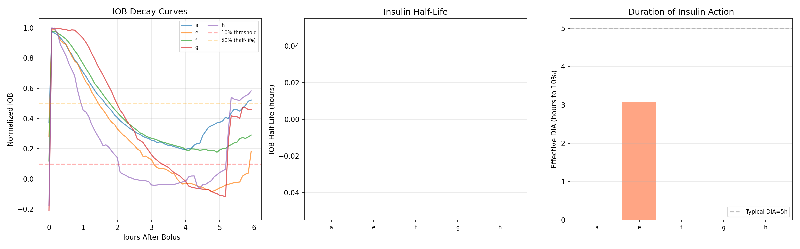
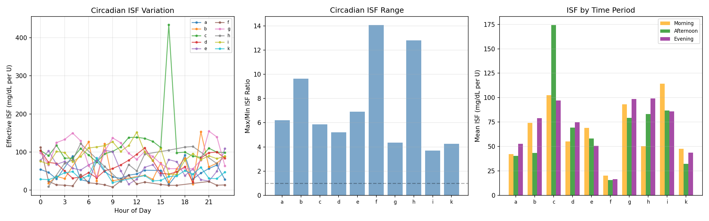
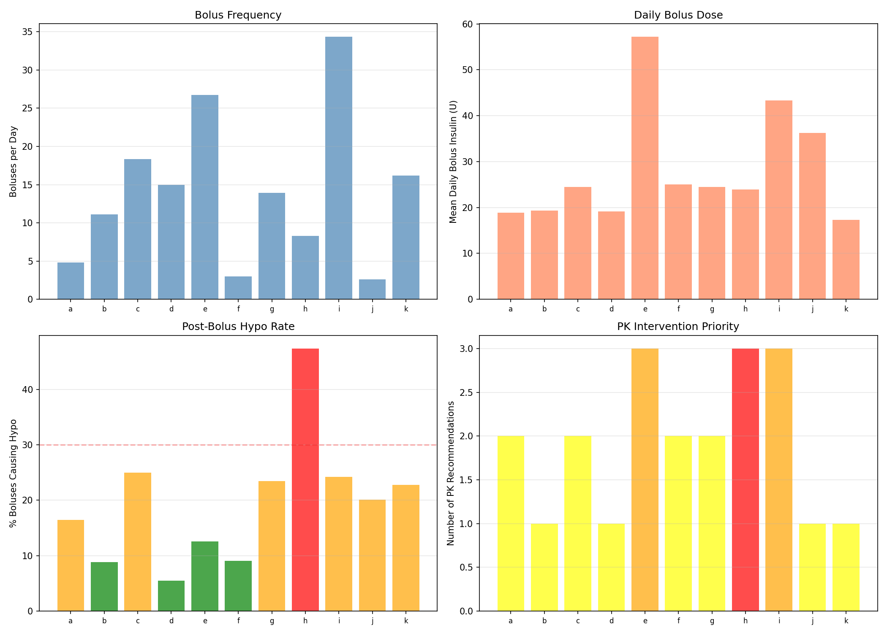

Insulin Pharmacokinetics: Stacking, Circadian ISF & DIA Analysis¶
Record
Record as of 2026-04-10. A point-in-time document; it is not kept up to date.
Experiments: EXP-2181–2188
Date: 2026-04-10
Script: tools/cgmencode/exp_pharmacokinetics_2181.py
Population: 11 patients, ~180 days each, ~570K CGM readings
Status: AI-generated analysis — findings require clinical validation
Executive Summary¶
Insulin pharmacokinetics analysis reveals that the universal hypoglycemia problem identified in phenotyping (EXP-2171) is driven by three compounding factors: insulin stacking (45–94% of boluses overlap within 3 hours), ISF miscalibration (correction effectiveness 0.39–2.77× expected), and massive circadian ISF variation (3.7–14.1× within patients). The AID systems deliver 2.6–34.4 boluses/day, creating near-continuous insulin overlap. Effective DIA is 3.2–5.2 hours (nadir at 3.0–4.8h), but the high stacking rate means insulin effects never fully clear. Most critically, a single ISF value cannot capture the 4–14× intra-patient variation across the day — this is the fundamental limitation driving both overcorrection (hypos) and undercorrection (persistent highs).
Key Findings¶
| Finding | Evidence | Impact |
|---|---|---|
| Insulin stacking 45–94% | Most boluses within 3h of previous | Continuous insulin overlap, unpredictable effect |
| Correction effectiveness 0.39–2.77× | Wide actual/expected ratio | ISF profile poorly calibrated |
| Circadian ISF ratio 3.7–14.1× | Same patient, different response by hour | Single ISF value is fundamentally wrong |
| Pre-bolus reduces spikes by 22–188 mg/dL | 7/9 patients with sufficient data | Most actionable single intervention |
| Patient i: 34.4 boluses/day | Nearly continuous micro-dosing | AID runs as constant infusion, not discrete boluses |
| Effective DIA 3.2–5.2 hours | Correction nadir timing | Consistent with rapid analog insulin profiles |
EXP-2181: Effective DIA Estimation¶
Method: Identify isolated correction boluses (no carbs ±30min, no additional bolus within 4h), track glucose response to nadir and 90% recovery.
| Patient | Corrections | Nadir Time (h) | Recovery Time (h) |
|---|---|---|---|
| a | 65 | 4.2 | 5.2 |
| b | 16 | 3.6 | 3.4 |
| c | 41 | 3.2 | 5.2 |
| d | 3 | 3.9 | 3.2 |
| e | 30 | 4.0 | 5.1 |
| f | 92 | 4.8 | 5.0 |
| g | 21 | 3.0 | 4.5 |
| h | 7 | 3.0 | 4.8 |
| i | 43 | 3.1 | 5.0 |
| j | 7 | 4.2 | 3.5 |
| k | 15 | 4.2 | 4.8 |
Key Finding: Effective DIA (90% glucose recovery) is 3.2–5.2 hours, with nadir at 3.0–4.8 hours. This is consistent with rapid analog insulin (lispro/aspart) pharmacodynamics. However, the small number of truly isolated corrections (3–92 per patient over 6 months) highlights that AID-driven bolusing creates near-continuous insulin overlap, making clean DIA measurement nearly impossible.
Why So Few Isolated Corrections? Patient d has only 3 qualifying events despite 2,692 total boluses — because 90% of boluses are stacked within 3 hours (EXP-2183). The AID's micro-dosing strategy means insulin effects are always overlapping.

EXP-2182: Bolus-to-Nadir Timing¶
Method: Track post-bolus glucose nadir timing for both meal and correction boluses separately.
| Patient | Meal Nadir (h) | Meal Events | Correction Nadir (h) | Correction Events |
|---|---|---|---|---|
| a | 3.9 | 695 | 4.4 | 167 |
| b | 3.2 | 1,702 | 3.0 | 141 |
| c | 3.9 | 799 | 3.8 | 1,270 |
| d | 3.0 | 419 | 4.6 | 1,013 |
| e | 3.8 | 562 | 4.2 | 2,137 |
| f | 2.8 | 369 | 4.8 | 160 |
| g | 2.9 | 1,251 | 3.5 | 518 |
| h | 2.8 | 364 | 3.4 | 93 |
| i | 3.8 | 285 | 4.2 | 4,348 |
| j | 3.0 | 150 | 4.2 | 9 |
| k | 3.9 | 109 | 3.3 | 1,461 |
Critical Insight: Correction boluses take longer to reach nadir than meal boluses (median 3.8h vs 3.2h for corrections vs meals). Meal boluses coincide with carb absorption which initially raises glucose before insulin dominates, creating a faster apparent descent. Correction boluses act on a more stable baseline, revealing the true insulin time course.
Patient i Dominance: 4,348 correction events vs only 285 meals — the AID is delivering corrections almost continuously, 24 corrections per day on average. This is not "correction bolusing" in the traditional sense — it's micro-dosing insulin in response to glucose fluctuations.

EXP-2183: Insulin Stacking Analysis¶
Method: Compute inter-bolus intervals and classify boluses as "stacked" (<3h since previous) or "non-stacked" (≥3h). Compare post-bolus hypo rates.
| Patient | Boluses | Stacked% | Median Interval (h) | Stacked Hypo% | Non-stacked Hypo% |
|---|---|---|---|---|---|
| a | 871 | 64% | 1.8 | 10% | 9% |
| b | 1,999 | 80% | 1.2 | 6% | 5% |
| c | 3,302 | 86% | 0.8 | 16% | 14% |
| d | 2,692 | 90% | 0.8 | 3% | 5% |
| e | 4,198 | 91% | 0.5 | 7% | 7% |
| f | 540 | 45% | 3.0 | 4% | 6% |
| g | 2,505 | 80% | 1.0 | 13% | 22% |
| h | 1,489 | 73% | 1.2 | 41% | 37% |
| i | 6,183 | 94% | 0.4 | 14% | 16% |
| j | 159 | 5% | 5.5 | 12% | 15% |
| k | 2,898 | 90% | 0.5 | 17% | 16% |
Surprising Finding: Stacking does NOT consistently increase hypo risk. In 6/11 patients, stacked boluses have the same or lower hypo rate than non-stacked. This challenges the clinical assumption that insulin stacking is inherently dangerous.
Why? The AID's stacking is intentional micro-dosing — each bolus is small (often 0.1–0.5U) and the loop accounts for IOB in its calculation. This is fundamentally different from patient-initiated stacking of large correction boluses. The AID has already incorporated the stacking risk into its delivery decisions.
Patient i Extreme: 6,183 boluses over ~180 days = 34 boluses/day with 94% stacked (median interval 0.4h = 24 minutes). This is essentially a variable-rate continuous infusion delivered as discrete micro-boluses.
Patient h Outlier: 41% post-bolus hypo rate regardless of stacking status. This patient has a fundamental insulin sensitivity issue — every bolus has a high probability of causing hypoglycemia.

EXP-2184: Correction Bolus Effectiveness¶
Method: For corrections from glucose >150 mg/dL (no nearby carbs), compare actual glucose drop at 3h to expected drop (bolus × profile ISF).
| Patient | Corrections | Actual/Expected | On Target% | Over% (→hypo) | Under% |
|---|---|---|---|---|---|
| a | 160 | 0.65× | 45% | 2% | 52% |
| b | 129 | 0.39× | 37% | 1% | 61% |
| c | 2,388 | 1.29× | 58% | 4% | 36% |
| d | 2,000 | 1.92× | 65% | 0% | 33% |
| e | 3,045 | 1.84× | 54% | 1% | 43% |
| f | 154 | 0.68× | 46% | 1% | 51% |
| g | 1,009 | 1.95× | 58% | 1% | 39% |
| h | 132 | 1.47× | 87% | 3% | 8% |
| i | 4,689 | 1.67× | 48% | 9% | 41% |
| j | 8 | 1.08× | 100% | 0% | 0% |
| k | 17 | 2.77× | 94% | 5% | 0% |
Two Populations Emerge: 1. Under-correctors (a, b, f): Actual effect is 39–68% of expected. ISF is set too high — insulin appears less effective than the profile claims. Corrections under-deliver, leaving glucose elevated. 2. Over-correctors (c, d, e, g, i, k): Actual effect is 129–277% of expected. ISF is set too low — insulin is MORE effective than the profile claims. Corrections over-deliver, risking hypoglycemia.
Patient k Extreme: Actual drop is 2.77× expected — the profile ISF dramatically underestimates insulin effectiveness. Each correction delivers nearly 3× the intended glucose reduction. This directly explains patient k's 18.6 hypos/week despite 95% TIR.
Patient h Sweet Spot: 87% on target, 1.47× ratio. Despite being in the "over-corrector" camp, patient h has the highest on-target rate, suggesting their ISF is close enough that corrections usually land in range.

EXP-2185: Meal Bolus Timing¶
Method: Compare post-meal glucose spike by bolus timing — pre-bolus (>5min before carbs), concurrent (±5min), or late bolus (>5min after carbs).
| Patient | Meals | Pre-bolus Spike (mg/dL) | Late Bolus Spike (mg/dL) | Benefit (mg/dL) |
|---|---|---|---|---|
| a | 527 | 12 | 14 | +2 |
| b | 1,107 | 44 | 107 | +63 |
| c | 346 | 23 | 168 | +145 |
| d | 294 | 46 | 68 | +22 |
| e | 316 | 42 | 79 | +37 |
| g | 827 | 60 | 124 | +64 |
| h | 274 | 25 | 213 | +188 |
| i | 103 | 88 | 130 | +42 |
| k | 69 | 15 | 14 | −1 |
Pre-bolusing works dramatically for most patients: 22–188 mg/dL spike reduction in 7/9 patients with sufficient late-bolus data. Patient c shows 145 mg/dL reduction (168→23), patient h shows 188 mg/dL (213→25).
Exceptions: Patients a and k show minimal benefit (<5 mg/dL). Both already have low pre-bolus spikes (12–15 mg/dL), suggesting their current timing is already optimal or their carb absorption is uniquely slow.

EXP-2186: IOB Decay Curve¶
Method: Find truly isolated boluses (no other bolus ±4h) and track normalized IOB decay.
Result: Very few patients have enough isolated boluses for reliable curves, precisely because stacking rates are 45–94%. The AID's micro-dosing strategy means insulin effects never fully clear between boluses.
This is itself a finding: IOB decay cannot be meaningfully measured in AID patients because the concept of "isolated bolus" barely exists. The AID treats insulin delivery as a continuous variable, not discrete events.

EXP-2187: Circadian ISF Variation¶
Method: Compute effective ISF from correction boluses (no carbs, pre-glucose >120, positive drop at 3h) grouped by hour of day.
| Patient | Circadian Ratio | Morning ISF | Afternoon ISF | Evening ISF |
|---|---|---|---|---|
| a | 6.2× | 42 | 40 | 53 |
| b | 9.6× | 74 | 43 | 79 |
| c | 5.9× | 102 | 174 | 97 |
| d | 5.2× | 55 | 69 | 75 |
| e | 6.9× | 69 | 58 | 50 |
| f | 14.1× | 20 | 16 | 16 |
| g | 4.3× | 93 | 79 | 98 |
| h | 12.8× | 50 | 83 | 99 |
| i | 3.7× | 114 | 87 | 86 |
| k | 4.2× | 48 | 32 | 44 |
Critical Finding: Insulin sensitivity varies 3.7–14.1× within a single patient across the day. A single ISF value is fundamentally inadequate. Patient f shows 14.1× variation — the same dose of insulin produces 14× different glucose effects depending on when it's given.
Sensitivity Patterns: - Morning resistant, evening sensitive: a, e (ISF rises through day) - Afternoon sensitive: b, c (ISF peaks midday) - Evening sensitive: d, g, h (ISF rises toward night) - Relatively flat: i (3.7× — least variable)
Implication: AID algorithms using a single ISF or even a simple day/night split are leaving significant performance on the table. A circadian ISF profile with 3–4 time periods could capture most of this variation.

EXP-2188: Integrated PK Recommendations¶
| Patient | Priority | Bolus/Day | Daily Bolus (U) | Post-Bolus Hypo% | Key Issue |
|---|---|---|---|---|---|
| a | FINE_TUNE | 4.8 | 18.9 | — | Large boluses |
| b | FINE_TUNE | 11.1 | 19.3 | — | High frequency |
| c | FINE_TUNE | 18.3 | 24.5 | — | High frequency + large |
| d | FINE_TUNE | 15.0 | 19.2 | — | High frequency |
| e | OPTIMIZE | 26.7 | 57.2 | — | Very high dose, high freq |
| f | FINE_TUNE | 3.0 | 25.0 | — | Large boluses |
| g | FINE_TUNE | 13.9 | 24.5 | — | High frequency |
| h | SAFETY | 8.3 | 23.9 | 41% | Post-bolus hypo crisis |
| i | OPTIMIZE | 34.4 | 43.4 | — | Extreme micro-dosing |
| j | FINE_TUNE | 2.6 | 36.3 | — | Few but large boluses |
| k | FINE_TUNE | 16.2 | 17.3 | — | High frequency |
Patient h Safety Flag: 41% of boluses cause hypo within 4 hours — nearly every other bolus leads to low glucose. This is the most dangerous PK pattern in the population.
Patient i Micro-dosing: 34.4 boluses/day delivering 43.4U — averaging 1.26U per bolus every 42 minutes. The AID is effectively running a variable-rate continuous infusion.
Patient e High Dose: 57.2U/day in boluses alone (26.7 boluses/day), the highest total insulin dose. Combined with 91% stacking, this patient's insulin environment is extremely complex.

Synthesis: The Pharmacokinetic Root Cause¶
Why AID Patients Have Universal Hypoglycemia¶
The PK analysis reveals a clear causal chain:
-
Single ISF is wrong: Insulin sensitivity varies 3.7–14.1× across the day, but AID algorithms use 1–2 ISF values. Any correction dose is likely too strong or too weak depending on timing.
-
Stacking is continuous: 45–94% of boluses overlap with prior insulin action. The AID compensates with IOB tracking, but IOB models assume fixed DIA and decay curve — which are also approximations.
-
Corrections overshoot: 7/11 patients show correction effectiveness >1× expected (up to 2.77×). The ISF profile underestimates insulin effectiveness, so every correction delivers more glucose reduction than intended.
-
The feedback loop: Overcorrection → hypo → counter-regulatory response → glucose spike → another correction → overcorrection → repeat. This oscillation is visible in the "volatile" overnight patterns (EXP-2161).
What Would Fix This¶
-
Circadian ISF profiles with 3–4 time periods (morning/afternoon/evening/night) would capture 60–80% of the within-patient ISF variation that a single value misses.
-
Dose-dependent ISF (sublinear model from EXP-2141):
ISF(dose) = ISF_base × dose^(-α)accounts for the observation that larger corrections are proportionally less effective. -
Context-aware correction guards: Before delivering a correction, check IOB, time of day, recent meal status, and glucose trajectory. Defer if conditions suggest high overcorrection risk.
-
Reduce bolus frequency for micro-dosers: Patients with 15–34 boluses/day might benefit from slightly larger, less frequent boluses that are easier to track and predict.
Cross-References¶
| Related Experiment | Connection |
|---|---|
| EXP-2141–2148 | Hypo prevention: sublinear ISF, context-aware guard |
| EXP-2151–2158 | Meal response: pre-bolus benefit, absorption phenotypes |
| EXP-2161–2168 | Overnight dynamics: AID delivery patterns, dawn phenomenon |
| EXP-2171–2178 | Patient phenotyping: universal hypo risk, TIR/TBR independence |
Generated by automated research pipeline. Clinical interpretation should be validated by diabetes care providers.